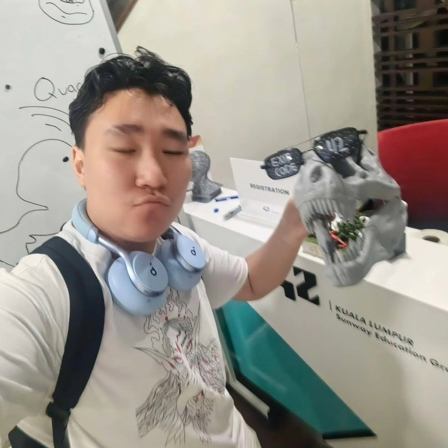

Nomady
2026Travel guide and journey recorder for Mongolia
Design and code
Portfolio / 2026
UX/UI Designer · Fullstack Developer
I design and build web and mobile products, from the first screens to the backend behind them.
01 / Selected work
A few projects I've designed and built, some on my own and some with the team at Nomax. Each one taught me something about the interface and about the system behind it.
Designer who codes
I enjoy working on both sides: figuring out what people need on screen, and building the APIs, payments and data that make it work.
4projects
Travel guide and journey recorder for Mongolia
Parcel tracking and pickup for China–Mongolia cargo
Online store for products from Chinese sellers, priced in ₮
Streaming platform with AI-made Mongolian subtitles
02 / About me
Ulaanbaatar, MN · UTC+8

I'm a designer and developer from Ulaanbaatar. I like taking a product from a rough idea to something people actually use, and I learn something new on every project.
Right now I'm at Nomax, working on Ecargo and Nomady. I use Claude a lot for research, prototyping and code.
03 / How I work
The same four steps, whether it's a small screen or a whole system.
Who it's for, what's hard for them today, and what a good result looks like.
Flows and screens first, so the hard questions come up early.
Data, API and interface together, so they fit each other.
Tests, real feedback, and the next version.
04 / Next project
If you have a role or a project where I could help, I'd be glad to hear from you.